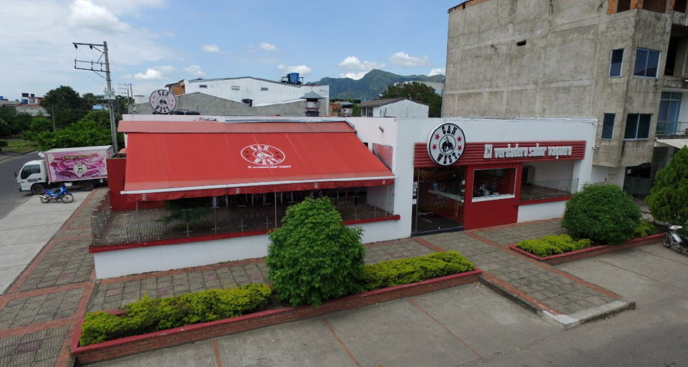
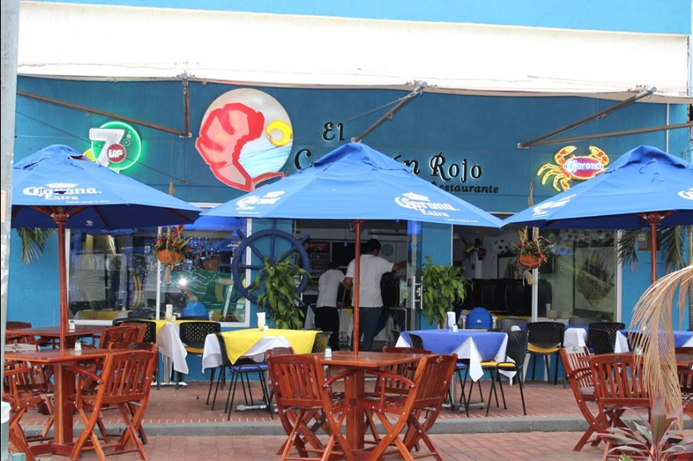
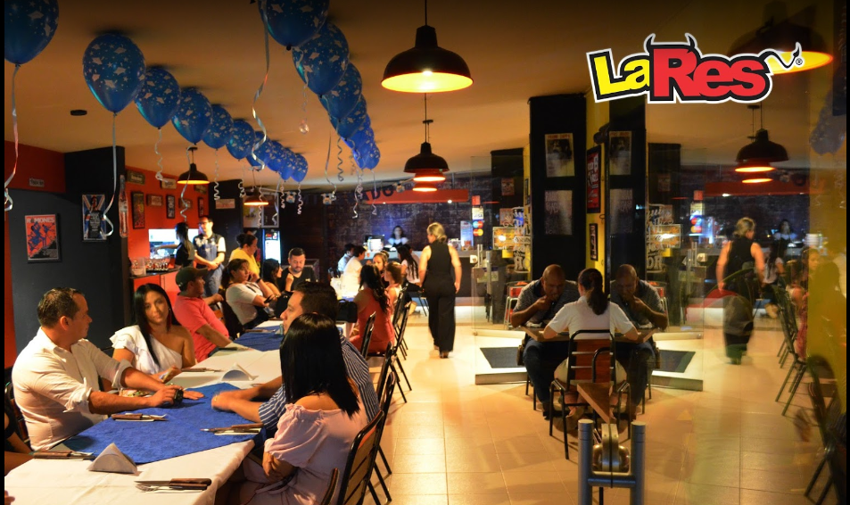
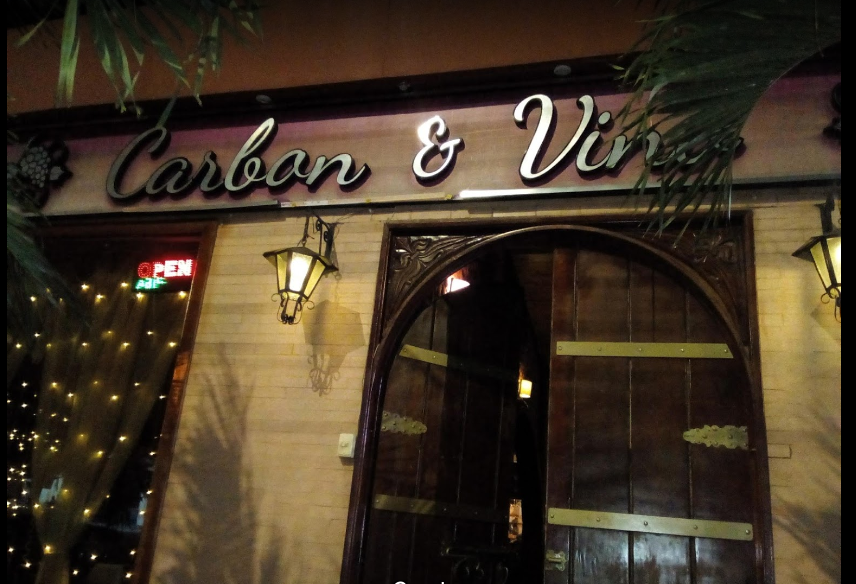
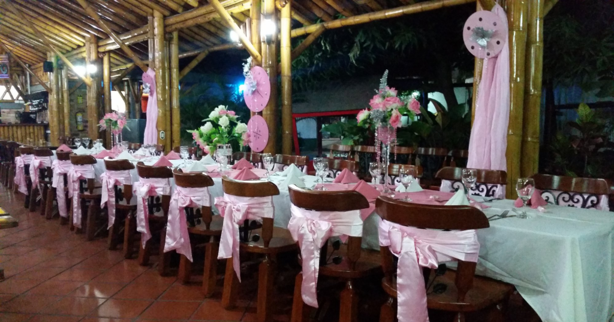

Can West
Can West es un restaurante de comidas rápidas, reconocido por la variedad de productos que ofrece, por calidad de servicio y por su trayectoria de 18 años lo cual lo ha consolidado como uno de los restaurantes más conocidos de Casanare. Hoy en día se encuentra certificado con la norma ISO 9001:2000, siendo el único restaurante de la zona en obtener dicha certificación de calidad.
Dirección: Calle 9 #23 esquina, Yopal, Casanare (aunque tiene más sucursales ;)
El camarón rojo
ofrece excelente servicio de comida de mar, mariscos entre otros, es un lugar muy agradable, con buenas opiniones y referencias de los clientes, se ofrece el servicio de alquiler para eventos familiares, empresariales y reuniones.
Dirección: Calle 7 #21-28. Yopal, Casanare.
La Res
Es un tipo de Comida tipo parrillada, se presta el servicio de reservas, se sirve alcohol, Servicio de mesa, Sillitas altas disponibles, Acceso para silla de ruedas, excelente lugar para pasar en familia, muy recomendado para todos los que desean probar comida tipo parrilla.
Dirección: Carrera 25 #11-11. Yopal, Casanare.
Carbón y vino
El lugar perfecto para disfrutar de una deliciosa y elegante comida familiar o empresarial, se puede alquilar para eventos privados, tiene servicio de mesa, Comida para llevar, acceso para silla de ruedas, un lugar muy recomendado para aquellas personas que visitan Yopal por primera vez.
Dirección: Calle 31 #5-17. Yopal, Casanare.
El Brasero

El Asadero y Restaurante-Bar presta servicios en la región ofreciendo a todos sus clientes los platos más selectos de la gastronomía nacional. Atendemos sus reuniones empresariales, familiares para hacer que cada fecha importante un momento inolvidable.
Dirección:Carrera 19 Calle 18. Yopal, Casanare.